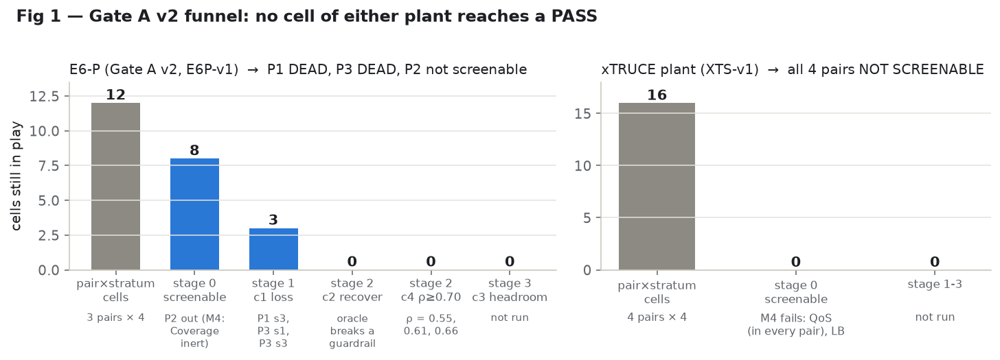
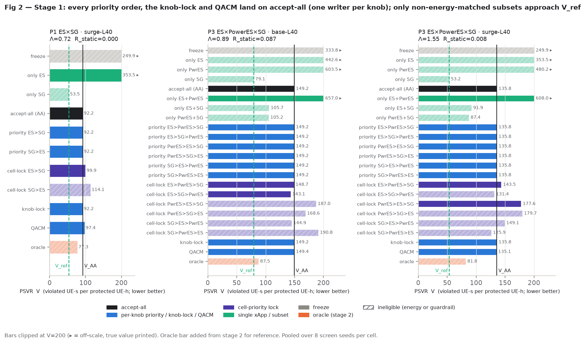
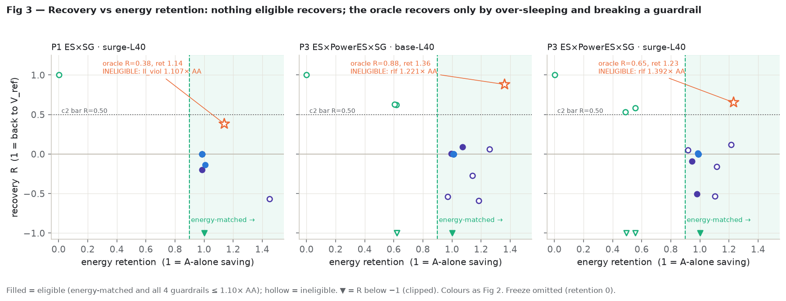
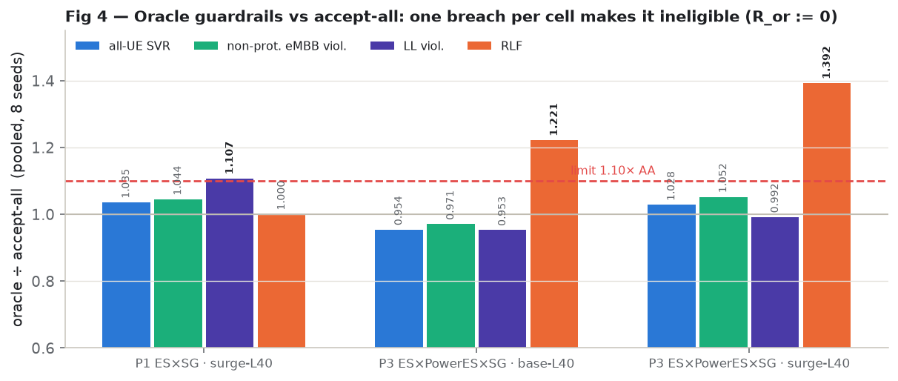
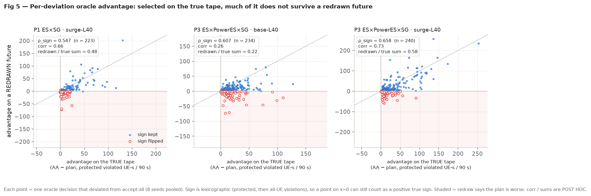
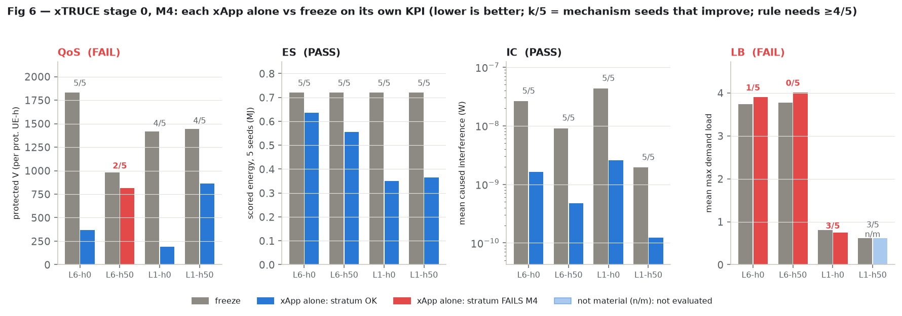

E6-P, preregistered verdict: DEAD (not recoverable) for P1 and P3. The co-deployment loss is real in three L40 cells (Λ 0.72-1.55), and no static rule recovers any of it (R_static 0.000 / 0.087 / 0.008). The budgeted oracle recovers 38-88 % of the loss, but in every one of those cells it breaks a guardrail against accept-all, so it is ineligible and R_or = 0. Its per-decision advantage also keeps its sign on a redrawn future only 55-66 % of the time, below the 0.70 bar. Stage 3 was not run.
xTRUCE, frozen XTS-v1: NOT SCREENABLE. Stage 0 mechanism check M4 fails for QoS (one stratum, 2/5 seeds) and for LB. QoS is in every pair, so no pair reaches stage 1.
We run several automated network apps together on one simulated radio network: some switch equipment off to save energy, one tries to guarantee service for a protected group of users. Our question was whether running them together hurts the protected users, and whether a smart referee between the apps could undo that harm. On the E6-P network the harm is real at medium load: protected users see 72 % to 155 % more service failures than the best single app gives them, at the same energy saving. No simple fixed rule (ranking the apps, locking settings, or a published referee called QACM) removes any of it; they behave exactly like having no referee. A referee that can see the future does remove much of the harm, but only by breaking other service limits and saving more energy than asked, and its choices are mostly luck: on a rerun of the same moment with fresh randomness, its choice is better only about 55-66 % of the time. So the pre-registered screen says there is no room for a learned referee on this network. A second, independently built network (a re-implementation of the published xTRUCE setup) could not be screened at all, because two of its apps failed a basic check that each app, alone, improves the thing it is meant to improve.

E6 (the earlier plant) showed privileged one-slot oracle headroom that no learned model could rank: the learned ρ vs the oracle was ≈ 0, and at request level the sign of an arbitration effect was not predictable (sign AUC 0.55-0.62, §8). The scouts then argued that any real edge for a learned O-RAN WG3 arbiter needs indirect, state-dependent conflicts scored at matched energy, because direct same-knob conflicts are resolved by static priority. E6-P was built to contain exactly that (energy saving versus a protected-slice guarantee), and Gate A v2 asks, per (pair, stratum), four conjunctive questions before any learner is trained:
Verdicts: PASS if some stratum meets 1-4; NOISE STOP if 1-3 hold but 4 fails everywhere; DEAD (no loss) if no stratum meets 1; DEAD (not recoverable) if every stratum meeting 1 fails 2; NO-EDGE STOP if 1-2 hold but 3 fails everywhere. The screen is a DEV screen: it can only kill a pair or pass it on to a separately preregistered confirmation (reserved seeds 150200-150399, untouched).
| commit | time (NST, +05:45) | what | relevance / hashes |
|---|---|---|---|
88cf35b | 09-28 09:41 | EB contrast shrinkage, beats-zero check; pin numpy 2.4.2 / scipy 1.18.1 | Platform pin after the E6 finding that oracle panels diverge across platforms (libm, glibc vs UCRT). |
f23bafb | 09-28 09:57 | E6-P build: tx-power knob, protected slice, PowerES / Coverage / SliceGuarantee xApps | Default-off, E6-scn-v1 bit-identical when disabled. |
2afbc1c | 09-28 09:57 | E6P_SPEC.md + E6P_SCREEN_PROTOCOL.md frozen; seeds 150000-150399 reserved | e6p_spec_commit = 2afbc1c8…; spec sha256 5db7ef17…; registry 5ab935fe… |
e15f2d1 | 09-28 10:50 | Screen arms, QACM mapping; amendment 8a (a): M1(b) restricted to macros with non-zero occupancy; QACM fitted on E6 DEV seeds 20-23; oracle "half" = slew rule | Before any protocol-seed run (found on a DEV smoke: 3/21 macros idle at the snapshot). Protocol sha 8acd424b… is stamped on stages 0a, 0b, 0c. |
| runs | 09-28 16:17 / 17:33 / 23:44 | Stage 0a / 0b / 0c launched on Kaggle | git e15f2d1, e6_dirty false |
2afd081 | 09-28 23:58 | amendment 8a (b), M4: evaluate "each xApp alone improves its own KPI" only in strata whose freeze own-KPI is material (PSVR ≥ 36, low-SINR share ≥ 0.01, energy always) | Outcome-informed, disclosed: made after stage-0b single-xApp vs freeze results on mechanism seeds (150020-150059) were seen; user decision ("ok change it"). No co-deployment, arbiter or screen-seed outcome existed. Protocol sha 9705653c… is stamped on stages 1 and 2. |
| runs | 09-29 00:25 / 02:00 | Stage 1 (992 jobs, 16 shards on 4 kernels) / stage 2 (24 oracle episodes, 5 kernels) | git 2afd081; verdict logged 06:30 |
4dae03a | 09-29 00:52 | xTRUCE plant (numpy) + XTRUCE_SIM_SPEC.md, 19 tests | Hedge built in parallel, before any E6-P verdict. |
c30f893 | 09-29 02:27 | E6-P arbiter L0 infra: units, randomized π0 collection with propensities, CRN labels, IPS/SNIPS/DR (25 tests) | Built in case a pair passed. Parked; never run on protocol seeds. |
f08747e | 09-29 06:39 | XTRUCE_SCREEN_PROTOCOL.md frozen (XTS-v1); seeds 190000-190399 and tags 7019/7020 registered | doc sha256 2f86bf9d…, plant file hashes pinned in the driver. Contains two pre-freeze changes: V_ref switched to E6-P's best-single definition, and the oracle guardrail constraint (informed by the E6-P outcome, disclosed in its §10; no xTRUCE outcome seen). Stage 0 launched 06:41. |
(1) M1(b) and the QACM/half implementation notes: before any protocol seed. (2) M4 material-strata rule: after single-xApp outcomes on mechanism seeds. Under the literal M4 rule, SliceGuarantee fails (it cannot improve PSVR at L10 where freeze PSVR is 10.8-13.4 and its minimum share never binds), which would have made P1 and P3 not screenable and ended the screen at stage 0. The amendment kept them in; it did not help them pass. (3) The xTRUCE oracle guardrail constraint is a lesson carried over from the E6-P result, disclosed before freeze. No value was changed after any co-deployment or oracle outcome.
E6-P extends E6 (24 cells: 7 macro sites × 3 sectors + 3 picos; 300 UEs; 120 s warm-up + 600 s scored) with a
per-macro Tx-power offset knob ptx (−9…+3 dB, 1 dB grid, EARTH energy model) and a protected eMBB slice
(20 % of eMBB UEs, ≈ 11 % of all UEs) with a work-conserving minimum PRB share prot_min (0…0.5) and a
2 Mb/s per-UE floor. Values come from TR 38.864, EARTH, TS 28.541, TR 26.925 and frozen E6 values, each tagged
[S]/[I]/[A] in E6P_SPEC.md. Metric: PSVR; energy-matched iff E_freeze − E_a ≥ 0.90 (E_freeze − E_A-alone);
guardrails vs AA: all-UE SVR, non-protected eMBB violated UE-s, LL violated UE-s, RLF, each ≤ 1.10×.
| pair | xApps | energy side A | protection side | conflict class |
|---|---|---|---|---|
| P1 (primary) | ES (carrier + pico sleep), SliceGuarantee | ES | SliceGuarantee | indirect: capacity removed vs guaranteed share |
| P2 | PowerES, Coverage | PowerES | Coverage | direct (same ptx) + indirect; declared direct-conflict control |
| P3 | ES, PowerES, SliceGuarantee | ES + PowerES | SliceGuarantee | three-way indirect |
Strata (4): scenario {base, surge} × load {L10, L40}; s0 base-L10, s1 base-L40, s2 surge-L10, s3 surge-L40. L is the TR 38.864 load (share of PRBs used, freeze arm, base). Seeds: load calibration 150000-150019; mechanism 150020-150059; timing 150060; screen 150100 + 10·stratum + j, j = 0..7 (8 per stratum); reserved 150200-150399. Arms: (1) freeze; (2) each xApp alone; (3) accept-all; (4) other subsets; (5) per-knob priority, every order; (6) cell-priority lock (60 s lease), every order; (7) knob-lock; (8) QACM behind its wrapper; (9) per-region hindsight static (stage 3 only); (10) budgeted WG3 oracle (stage 2 only: D = 20 s, H = 90 s, n_glob 6, n_loc 2, modes accept / reject / half / lock + rollback, churn capped at AA's, true-tape lookahead, one-sided energy bound).
| stratum | load_factor (frozen) | bisection iterations | fit mean L (150000-09) | check mean L (150010-19) | check range |
|---|---|---|---|---|---|
| L10 | 0.7875 | 2 | 10.48 % | 10.21 % | 9.00-13.09 % |
| L40 | 1.75547 | 6 | 40.48 % | 39.90 % | 33.38-50.23 % |
| pair:xApp | own KPI | s0 base-L10 | s1 base-L40 | s2 surge-L10 | s3 surge-L40 | literal rule | amended (8a) |
|---|---|---|---|---|---|---|---|
| P1:ES | energy (MJ) | 14.15 → 10.17 (4/4) | 17.39 → 16.10 (4/4) | 14.18 → 10.21 (4/4) | 17.30 → 15.62 (4/4) | pass | pass |
| P1:SliceGuarantee | PSVR | 13.4 → 13.4 (0/4) n/m | 254.9 → 58.2 (4/4) | 10.8 → 10.8 (1/4) n/m | 383.7 → 124.9 (4/4) | fail | pass |
| P2:PowerES | energy (MJ) | 14.15 → 13.31 (4/4) | 17.39 → 15.98 (4/4) | 14.18 → 13.31 (4/4) | 17.30 → 15.41 (4/4) | pass | pass |
| P2:Coverage | low-SINR share | 0.00022 → 0.00020 (3/4) n/m | 0.00146 → 0.00138 (3/4) n/m | 0.00024 → 0.00026 (1/4) n/m | 0.00107 → 0.00142 (0/4) n/m | fail | inert → not screenable |
| P3:ES | energy (MJ) | 14.15 → 10.17 (4/4) | 17.39 → 16.10 (4/4) | 14.18 → 10.21 (4/4) | 17.30 → 15.62 (4/4) | pass | pass |
| P3:PowerES | energy (MJ) | 14.15 → 13.30 (4/4) | 17.39 → 15.86 (4/4) | 14.18 → 13.34 (4/4) | 17.30 → 15.56 (4/4) | pass | pass |
| P3:SliceGuarantee | PSVR | 13.4 → 13.4 (0/4) n/m | 254.9 → 57.7 (4/4) | 10.8 → 11.0 (1/4) n/m | 383.7 → 124.4 (4/4) | fail | pass |
Cells: freeze → xApp alone, pooled over 4 seeds (seeds improving). n/m = freeze KPI not material, stratum not evaluated under 8a. Energy in MJ scored, 4 seeds.
4 528 s per episode (121 s reference arms + 4 406 s oracle), 947 rollouts, 31 decision epochs, 24 deviations. The actual stage-2 episodes took 7 529-9 320 s each (mean 8 117 s; 24 episodes ≈ 54 CPU-h).
992 jobs (P1 and P3 × 4 strata × 8 seeds × all arms, freeze shared; P2 skipped as not screenable), mean 62 s per job. Criterion 1 per pair-stratum:
| pair · stratum | A saves | AA retention | V_AA | V_ref (SG alone) | Λ | V_AA−V_ref | LB90 | R_static | best eligible static arm | c1 |
|---|---|---|---|---|---|---|---|---|---|---|
| P1 · s0 base-L10 | 28.6% | 1.001 | 24.5 | 9.2 | 1.66 | 15.3 | 8.3 | 0.000 | priority / knob-lock / QACM (= AA) | fail: V_AA−V_ref 15.3 < 36 |
| P1 · s1 base-L40 | 8.2% | 0.994 | 105.3 | 78.2 | 0.35 | 27.1 | 18.6 | 0.000 | priority / knob-lock / QACM (= AA) | fail: V_AA−V_ref 27.1 < 36 |
| P1 · s2 surge-L10 | 26.8% | 1.000 | 20.3 | 14.0 | 0.45 | 6.3 | 3.7 | 0.000 | priority / knob-lock / QACM (= AA) | fail: V_AA−V_ref 6.3 < 36 |
| P1 · s3 surge-L40 | 9.4% | 0.986 | 92.2 | 53.5 | 0.72 | 38.7 | 25.2 | 0.000 | priority / knob-lock / QACM (= AA) | PASS |
| P3 · s0 base-L10 | 31.1% | 0.998 | 32.9 | 9.2 | 2.58 | 23.7 | 17.3 | 0.362 | only ES+SG | fail: V_AA−V_ref 23.7 < 36 |
| P3 · s1 base-L40 | 13.3% | 1.010 | 149.2 | 79.1 | 0.89 | 70.1 | 30.0 | 0.087 | cell-lock ES>SG>PowerES | PASS |
| P3 · s2 surge-L10 | 32.0% | 1.000 | 29.5 | 14.0 | 1.11 | 15.5 | 11.6 | 0.000 | priority / knob-lock / QACM (= AA) | fail: V_AA−V_ref 15.5 < 36 |
| P3 · s3 surge-L40 | 19.1% | 0.987 | 135.8 | 53.2 | 1.55 | 82.5 | 55.9 | 0.008 | QACM | PASS |
Every cell is screenable (A saves 8.2-32.0 % of freeze energy), AA is energy-matched everywhere (retention 0.986-1.010), Λ ≥ 0.34 and LB90 > 0 everywhere. The five failing cells fail only on the 36-unit materiality floor: the loss is large in relative terms at L10 (Λ up to 2.58) but small in absolute terms. In every cell the reference is SliceGuarantee alone, which is never energy-matched (it saves nothing), so V_ref is a protection ceiling, not an attainable arm.

In all 8 cells, every per-knob priority order and the knob-lock give exactly AA's pooled V and AA's churn (e.g. 176.25, 386.6, 367, 511, 442 applied changes per episode). Each knob has exactly one writer (ES owns carrier and sleep, PowerES owns ptx, SliceGuarantee owns prot_min), so there is no same-knob contention for them to resolve; the loss is purely indirect. QACM also equals AA exactly in all four L10 cells; in the L40 cells it is within 0.7 V of AA for P3 (149.4 vs 149.2; 135.1 vs 135.8, R = 0.008, the P3 s3 R_static) and slightly worse for P1 (97.4 vs 92.2 at s3; 113.5 vs 105.3 at s1). The only static arm with R > 0.01 in a c1 cell is a cell-priority lock (ES > SG > PowerES, P3 s1, R = 0.087).
Arm-level table for the three c1 cells (V / R / energy retention; E = not energy-matched, G = energy-matched but fails a guardrail; shaded V = identical to AA):
| grp | arm | P1 · surge-L40 | P3 · base-L40 | P3 · surge-L40 | ||||||
|---|---|---|---|---|---|---|---|---|---|---|
| V | R | ret | V | R | ret | V | R | ret | ||
| 1 | freeze | 249.9 | -4.081 | 0.00 E | 333.8 | -2.632 | 0.00 E | 249.9 | -1.383 | 0.00 E |
| 2 | only ES | 353.5 | -6.762 | 1.00 | 442.6 | -4.183 | 0.62 E | 353.5 | -2.638 | 0.49 E |
| 2 | only PowerES | — | — | — | 603.5 | -6.477 | 0.62 E | 480.2 | -4.173 | 0.56 E |
| 2 | only SG | 53.5 | 1.000 | 0.00 E | 79.1 | 1.000 | -0.00 E | 53.2 | 1.000 | 0.00 E |
| 3 | accept-all (AA) | 92.2 | 0.000 | 0.99 | 149.2 | 0.000 | 1.01 | 135.8 | 0.000 | 0.99 |
| 4 | only ES+PowerES | — | — | — | 657.0 | -7.239 | 1.00 | 608.0 | -5.722 | 1.00 |
| 4 | only ES+SG | — | — | — | 105.7 | 0.620 | 0.62 E | 91.9 | 0.531 | 0.49 E |
| 4 | only PowerES+SG | — | — | — | 105.2 | 0.628 | 0.61 E | 87.4 | 0.586 | 0.56 E |
| 5 | priority ES>PowerES>SG | — | — | — | 149.2 | 0.000 | 1.01 | 135.8 | 0.000 | 0.99 |
| 5 | priority ES>SG | 92.2 | 0.000 | 0.99 | — | — | — | — | — | — |
| 5 | priority ES>SG>PowerES | — | — | — | 149.2 | 0.000 | 1.01 | 135.8 | 0.000 | 0.99 |
| 5 | priority PowerES>ES>SG | — | — | — | 149.2 | 0.000 | 1.01 | 135.8 | 0.000 | 0.99 |
| 5 | priority PowerES>SG>ES | — | — | — | 149.2 | 0.000 | 1.01 | 135.8 | 0.000 | 0.99 |
| 5 | priority SG>ES | 92.2 | 0.000 | 0.99 | — | — | — | — | — | — |
| 5 | priority SG>ES>PowerES | — | — | — | 149.2 | 0.000 | 1.01 | 135.8 | 0.000 | 0.99 |
| 5 | priority SG>PowerES>ES | — | — | — | 149.2 | 0.000 | 1.01 | 135.8 | 0.000 | 0.99 |
| 6 | cell-lock ES>PowerES>SG | — | — | — | 148.7 | 0.008 | 1.00 | 143.5 | -0.093 | 0.95 |
| 6 | cell-lock ES>SG | 99.9 | -0.200 | 0.99 | — | — | — | — | — | — |
| 6 | cell-lock ES>SG>PowerES | — | — | — | 143.1 | 0.087 | 1.07 | 131.4 | 0.053 | 0.92 G |
| 6 | cell-lock PowerES>ES>SG | — | — | — | 187.0 | -0.539 | 0.97 G | 177.6 | -0.507 | 0.98 |
| 6 | cell-lock PowerES>SG>ES | — | — | — | 168.6 | -0.276 | 1.14 G | 179.7 | -0.532 | 1.10 G |
| 6 | cell-lock SG>ES | 114.1 | -0.568 | 1.45 G | — | — | — | — | — | — |
| 6 | cell-lock SG>ES>PowerES | — | — | — | 144.9 | 0.062 | 1.26 G | 149.1 | -0.162 | 1.12 G |
| 6 | cell-lock SG>PowerES>ES | — | — | — | 190.8 | -0.593 | 1.18 G | 125.9 | 0.119 | 1.22 G |
| 7 | knob-lock | 92.2 | 0.000 | 0.99 | 149.2 | 0.000 | 1.01 | 135.8 | 0.000 | 0.99 |
| 8 | QACM | 97.4 | -0.137 | 1.01 | 149.4 | -0.002 | 1.01 | 135.1 | 0.008 | 0.98 |
| 10 | oracle (stage 2) | 77.3 | 0.383 | 1.14 G | 87.5 | 0.881 | 1.36 G | 81.8 | 0.654 | 1.23 G |
The one static move that recovers a lot is to not co-deploy one of the energy xApps: in P3 L40, "only ES+SG" gives R = 0.620 / 0.531 and "only PowerES+SG" R = 0.628 / 0.586 (base / surge), but at energy retention 0.49-0.62, far below 0.90. Nobody in the literature reports this non-energy-matched option as a baseline (debate, C3).

24 oracle episodes (3 cells × 8 seeds), ≈ 955-959 rollouts per episode.
| cell | raw R | energy retention | SVR ÷ AA | non-prot. eMBB ÷ AA | LL viol ÷ AA | RLF ÷ AA | eligible | R_or | ρ_sign | n dev. | verdict (c2 / c4) |
|---|---|---|---|---|---|---|---|---|---|---|---|
| P1 · surge-L40 | 0.383 | 1.138 | 1.035 | 1.044 | 1.107 | 1.000 | no | 0 | 0.547 | 223 | fail / fail |
| P3 · base-L40 | 0.881 | 1.361 | 0.954 | 0.971 | 0.953 | 1.221 | no | 0 | 0.607 | 234 | fail / fail |
| P3 · surge-L40 | 0.654 | 1.230 | 1.028 | 1.052 | 0.992 | 1.392 | no | 0 | 0.658 | 240 | fail / fail |
Verdict: P1 DEAD (not recoverable), P3 DEAD (not recoverable). c2 fails in every c1 cell because R_or = 0 (ineligible), so c3 and stage 3 are moot. c4 would fail in every cell even if the oracle were eligible. Note that P1's LL breach is marginal (1.107 vs 1.10); even with it waived, raw R = 0.383 < 0.50 and ρ_sign = 0.547.

The frozen oracle objective is lexicographic (protected violated UE-s, then all-UE violated UE-s). Its admissibility
test sees only energy, and only one-sided (energy ≤ bound; e6p_screen.py Oracle.roll, lines
404-423). RLF and LL are invisible to it and over-saving energy is allowed, so it over-sleeps (retention 1.14-1.36).
The oracle's rollback is inert on ES because the rollback window (60 s) is shorter than the carrier/sleep dwell
(120 s). In P3 surge-L40, accept-all itself was energy-inadmissible at 5 of 240 deviations, and one deviation had a
negative true-tape sign (a worse but admissible plan). None of this was amended after the outcome.
None of these quantities is a protocol criterion, and none can become one for E6P-v1. They are recomputed here
from the per-deviation records (deviations in e6p-s2/all.jsonl: protected and all-UE violated
UE-s of AA and of the chosen plan, on the true tape and on the redrawn copy). Advantage = AA − plan in protected
violated UE-s over the 90 s rollout (positive = plan better).
| cell | corr(true, redrawn) | Σ true adv. | Σ redrawn adv. | kept share (Σ redrawn / Σ true) | seed-bootstrap 5 % of Σ redrawn | |true|-weighted sign retention | raw R | de-noised R = raw R × kept share | implied μ/σ |
|---|---|---|---|---|---|---|---|---|---|
| P1 · surge-L40 | 0.658 | 3107 | 1490 | 0.480 | −317 | 0.828 | 0.383 | 0.184 | 0.39 |
| P3 · base-L40 | 0.257 | 5149 | 1129 | 0.219 | +395 | 0.680 | 0.881 | 0.193 | 0.62 |
| P3 · surge-L40 | 0.734 | 7053 | 4112 | 0.583 | +1294 | 0.850 | 0.654 | 0.381 | 0.78 |
Bootstrap: 10 000 resamples of the 8 seeds, RNG seed 20260929 (post hoc, not a protocol stream). Weighted retention: Σ|true adv.|·1[lexicographic sign kept] / Σ|true adv.|. Implied μ/σ: invert ρ = p² + (1−p)², p = Φ(μ/σ) (a Gaussian model of the per-deviation advantage).

Agent B's numbers in DEBATE_2026-09-29.md reproduce for the correlations (0.66 / 0.26 / 0.73), the
summed redrawn advantage (+1490 / +1129 / +4112), the kept shares (48 / 22 / 58 %) and the de-noised R (0.18 / 0.19 /
0.38). Its bootstrap lower bounds (−320 / +396 / +1256) differ slightly from mine (−317 / +395 / +1294), as expected
from a different resampling stream. Its |advantage|-weighted sign retention (0.75 / 0.84 / 0.68) does not
reproduce under the definition above (0.83 / 0.68 / 0.85); its weighting was not stated, and the pattern looks like a
different weight or a permuted cell order. Agent A's implied μ/σ (0.41 / 0.59 / 0.78) is close to the exact inversion
(0.39 / 0.62 / 0.78).
A pure-numpy re-implementation of the plant in Xia et al., "xTRUCE: A Provably Safe Arbiter for Multi-xApp Conflict Mitigation in Agentic O-RAN", arXiv:2608.28532v2: 4 cells / 20 UEs, 500 m ISD, 12 × 360 kHz RBs, TR 36.814 UMa path loss with 8 dB shadowing, AR(1) Rayleigh fading ρ = 0.349, 6 Mb/s exponential arrivals, 1 s epochs, 10/50/2 W power parameters, 3 protected UEs with a 2 Mb/s floor. About 2.3-2.9 k epochs/s. The authors' code is not public.
Provenance (XTRUCE_SIM_SPEC.md): 32 values stated in the paper [P]; 24 field values
assumed [A] (7 from named 3GPP/ITU sources, 1 from TR 38.864, 2 inherited from E6-P, 13 with no source, and
qos_margin = 0.30 marked [A*] because it was chosen on seeds 0-2 with outcomes visible); plus 12
model-level assumptions (layout, UE drop, xApp rules, hallucination model, …).
| our earlier note | what the paper says |
|---|---|
| "3GPP UMa path loss" read as TR 38.901 | Reference [38] is TR 36.814 V9.0.0; implemented as Table B.1.2.1-1 UMa. |
| xApps command RB share / power / sleep / association | Those are the arbiter's action variables. xApps post KPI targets; the arbiter maps targets to actions. Our knob-level request interface is an adaptation. |
| "65-92 %" violation | That is the Clipping benchmark's e1 violation ratio across hallucination levels (Direct 30-86 %, xTRUCE 0 %). |
| CVXPY static arbiter as baseline | CVXPY is xTRUCE's own solver. The baselines are Direct and Clipping; there is no static priority baseline. |
| direct / indirect conflict scenarios | The paper cites the taxonomy but defines no such scenarios; its experiments are hallucination, overload, renegotiation and scaling sweeps. |
Sanity run (seeds 0-2, disclosed, not screen seeds): at 6 Mb/s accept-all (126 protected violated UE-s) lost 35 % versus ES + QoS (93), both energy-matched; at 6 Mb/s cells never sleep.
Same Gate A v2 criteria and thresholds as E6-P (36 per protected UE-hour = 18 violated UE-s per seed-episode). Pairs X1 (QoS, ES), X2 (+IC), X3 (+LB), X4 (all four; primary, the paper's deployment). Strata L6/L1 (6 or 1 Mb/s) × h0/h50 (hallucination 0 or 0.5). N = 40 screen seeds per stratum from 190000 + 50·stratum + j after the paper's floors-reachable seed screen; mechanism seeds j = 44-48; reserved 190200-190399. Guardrails G1 non-protected throughput ≥ 0.90 × AA, G2 change-limit epochs ≤ 1.10 × AA + 1 %. Oracle D = 10, H = 40, 29 rollouts per decision, starting at t = 0, with the guardrail admissibility constraint. Estimated full cost 4-17 CPU-h.
| xApp | own KPI | L6-h0 | L6-h50 | L1-h0 | L1-h50 | M4 |
|---|---|---|---|---|---|---|
| QoS | protected V | 1829 → 370 (5/5) | 984 → 816 (2/5) | 1418 → 190 (4/5) | 1445 → 864 (4/5) | FAIL |
| ES | energy, 5 seeds (MJ) | 0.720 → 0.636 (5/5) | 0.720 → 0.556 (5/5) | 0.720 → 0.350 (5/5) | 0.720 → 0.366 (5/5) | pass |
| IC | caused interference (W) | 2.61e-08 → 1.64e-09 (5/5) | 9.02e-09 → 4.76e-10 (5/5) | 4.29e-08 → 2.58e-09 (5/5) | 1.93e-09 → 1.22e-10 (5/5) | pass |
| LB | mean max demand load | 3.739 → 3.901 (1/5) | 3.773 → 4.006 (0/5) | 0.809 → 0.752 (3/5) | 0.621 → 0.621 (3/5) n/m | FAIL |
Freeze → xApp alone, pooled over 5 mechanism seeds (seeds improving). Red = stratum fails. n/m = not material (LB freeze max load ≤ 0.80).

Verdict: NOT SCREENABLE under XTS-v1. QoS is in every pair, so X1-X4 are all excluded. Changing any value means XTS-v2 with fresh seeds. The natural XTS-v2 (evaluate M4 only at h0, where a hallucinating xApp is not meant to be reliable) would let QoS pass (5/5 and 4/5) but LB would still fail at L6-h0 (1/5), so X1 and X2 would be screened and X3, X4 would not. That change is outcome-informed and was not made without the user. Caveat: the xApp rules are ours (unpublished in the paper), so any xTRUCE-plant outcome has limited evidential weight against the published arbiter. The raw stage-0 file also contains accept-all episodes of each pair on the mechanism seeds (used for M7 only); no criterion quantity was computed from them.
RANK_DIAG_RESULT.md). At request level,
whether a reject matters was predictable (AUC 0.97 at H = 10) but its sign was not (best sign AUC
0.552 / 0.617 / 0.575 at H = 10 / 30 / 90, all under 0.70; PILOT_RESULT.md).ARBITER_DESIGN.md) and its L0
infrastructure (c30f893) are parked, not tested.Three read-only agents argued fixed positions (DEBATE_2026-09-29.md):
Recommendation in the morning brief: C now (almost every table derives from runs on disk); optionally B's cheap falsifier only (O_tape, guardrail-constrained, fresh seeds, ≈ 36 CPU-h, preregistered as v2); treat A as the only remaining edge hypothesis and first check cheaply whether any eligible static envelope exists; do not build the learned per-decision arbiter.
Later on 2026-09-29, after the morning brief, an E6-P v2 O_tape
protocol file appeared in docs/benchmark/E6P_V2_OTAPE_PROTOCOL.md (untracked in git at the time of this
report). It is outside the scope of this overnight record.
Figures and every number in this report (local, seconds, reads raw files only):
PYTHONPATH=. .venv/Scripts/python.exe reports/2026-09-29-e6p-screen-xtruce-negative/make_figs.pyDriver summaries (cross-check; never pass --write-state when re-summarising):
R=scratchpad/e6_dev/runs
PYTHONPATH=. .venv/Scripts/python.exe scratchpad/e6_dev/e6p_screen.py summary \
--in $R/e6p-s0b/all.jsonl,$R/e6p-s0c/all.jsonl,$R/e6p-s1/all.jsonl,$R/e6p-s2/all.jsonl --json OUT.json
PYTHONPATH=. .venv/Scripts/python.exe scratchpad/e6_dev/xtruce_screen.py summary \
--in $R/xts-s0/all.jsonl,$R/xts-s0c/all.jsonlBoth agree with make_figs.py on every verdict, V, Λ, LB90, R, retention and ρ_sign reported here.
Re-running the screens (cloud only, per stage, each needs the user's go):
python scratchpad/e6_dev/e6p_screen.py run --stage {0a,0b,0c,1,2,3} --part i/k --out FILE.jsonl
python scratchpad/e6_dev/xtruce_screen.py run --stage {0,0c,1,1x,2,3} --part i/k --out FILE.jsonl
# via cloud.py the per-stage wrappers e6p_stage<S>.py / xtruce_stage<S>.py are usede6_dirty false).
xTRUCE stage 0 at f08747e. Screen drivers live in scratchpad/e6_dev/ (untracked); the frozen docs and
plant are committed.fp_match False against the local pin. Kaggle and Colab (both Linux) may be pooled
within one comparison; never run protocol seeds on local Windows or mix it into a comparison.scratchpad/e6_dev/decision/{MORNING_BRIEF_2,DEBATE_2026-09-29,ARBITER_DESIGN}.md ·
.tmp/PLAN.md (Overnight log 2026-09-29) · docs/benchmark/{E6P_SPEC,E6P_SCREEN_PROTOCOL,XTRUCE_SIM_SPEC,XTRUCE_SCREEN_PROTOCOL}.md ·
raw runs scratchpad/e6_dev/runs/{e6p-s0a,e6p-s0b,e6p-s0c,e6p-s1,e6p-s2,xts-s0,xts-s0c}/all.jsonl ·
scratchpad/decision_stack/RANK_DIAG_RESULT.md, scratchpad/decision_stack/req_pilot/PILOT_RESULT.md ·
commits 88cf35b, f23bafb, 2afbc1c, e15f2d1, 2afd081, 4dae03a, c30f893, f08747e.
Figures and figures_data.json are regenerated live from the raw runs by make_figs.py.